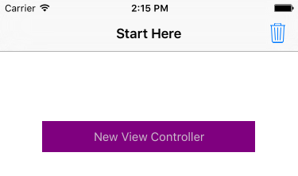
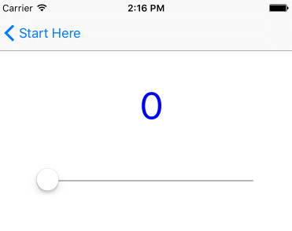

Duration
5 minutes
Goals
In this group exercise, we will identify a case where a framework peer promotion causes a memory leak in a Xamarin.iOS application.
Assets
The provided Exercise 4 folder contains a sub-folder named Start with a pre-built Xamarin.iOS application which has a reference cycle in it due to a framework peer promotion.
Steps
Below are the step-by-step instructions to find and fix the reference cycle.
Run the application to see the issue
Let's start by familiarizing ourselves with the starter solution.
- Open the PeerPromotion.sln solution.
- Run the application to see what it does. It should show a screen with a purple button and a GC trash icon in the toolbar: 
- If you press the button, it will display a second screen using a navigation controller. You will also see output in the debug window related to the creation of the screen. 
- Using the slider will update the label.
- Go back to the previous screen by tapping the Back button.
- Tapping the trash can icon will perform a GC. Notice that the child view is not being destroyed.
- Navigate to and from the child view a few times - you should see the counter continuing to increase but it never goes down; we're leaking the child screen each time. However this leak is not due to a direct parent/child relationship!
Explore the source code
Next, lets look at the code for the application to see if we can identify the issue.
-
Expand the solution contents.
- It has a main
MainViewController. which provides the first screen you interact with. - It has a ViewController.cs which contains the child view.
- It has a main
-
The ViewController.cs class is the child view which is not being cleaned up properly. Notice that it outputs the creation and destruction as part of the constructor and
Disposemethod. -
In this case, the leak might not be as obvious as earlier examples. But look at the event handler we are wiring up on the slider. Notice we are using a lambda here, but the lambda accesses state in the view controller - that means it will have a reference to the
ValueLabelobject as part of the handler - ultimately we are creating a reference cycle here, we just can't see it.
Approaches to fixing the leak.
As before, there are a few ways we could fix this:
-
We could catch when the view is being shown and dismissed and connect and disconnect the event handler (
ViewDidAppearandViewDidDisappear). This means we have to use a standard method handler instead of a lambda. - We could use the Storyboard designer to create the event handler. In this case, it uses the underlying action message to connect up the event rather than a .NET event handler - so no reference cycle is created.
- Pick one of these approaches and run the app again and verify that this solves the problem.
Summary
In this exercise, we fixed a framework peer promotion issue which caused a circular reference through an event handler. Check the completed solution in Exercise 4 if you want to see the final code.